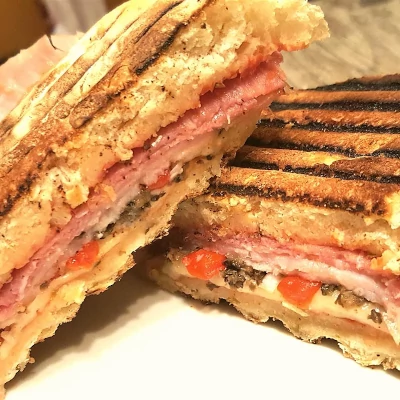

Deluxe Pizza Panini
Paninis make a boring sandwich a gourmet meal.
is a classic dish and can also sometimes
become routine. A grilled pizza panini is a creative
way to jazz up the boring sandwich and predictable pizza.
Great to heat up as leftovers also for lunch the next day!

Ingredients
- 1 teaspoon butter
- 2 tablespoons sliced fresh mushrooms
- 0.5 cup tomato sauce
- ciabatta rolls, split
- cloves garlic, minced
- tablespoon dried oregano
- slices hot Genoa salami
- slices roasted ham
- tablespoons diced red onion
- tablespoons chopped roasted red pepper
- tablespoons chopped black olives
- leaves basil, chopped
- slices provolone cheese
Directions
-
Melt butter in a small skillet over medium-high heat;
add mushrooms and saute until tender, 5 to 7 minutes.
Remove from heat to cool.
-
Preheat a panini press according to manufacturer's instructions.
-
Spread an even layer of tomato sauce onto the cut sides of each
roll. Sprinkle equal amounts of garlic and oregano
onto each roll. Place 2 salami slices side by side onto each
roll; top each with 2 slices ham. Divide red onion, mushrooms,
red pepper, olives, and basil between the 4 sandwiches and
spread evenly atop the meats. Finish by topping with provolone
cheese and sandwiching roll halves around the fillings.
-
Cook sandwiches on preheated panini press until there are dark brown
grill marks on the bread, the cheese is melted, and the center is warm,
about 5 minutes.